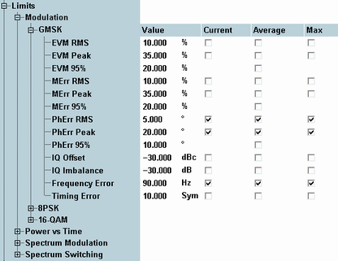

The limits in the multi-evaluation configuration dialog define upper limits for the modulation, power vs. time and spectrum results. See also "Limit Settings and Conformance Requirements".

The limits for the different modulation schemes are defined separately.
Upper limits for the measured quantities which characterize the modulation accuracy.
- EVM RMS: Upper limit for the EVM, RMS-averaged over the burst
- EVM peak: Upper limit for the peak EVM value in the burst
- EVM 95%: Upper limit for the 95th percentile of the EVM. The 95th percentile is the value of the measured quantity below which 95 % of all observations fall. For example, an EVM 95th percentile of 0.8 indicates that 95 % of all measured EVM results were below 0.8, 5 % equal to or larger than 0.8.
The definition of the phase error and magnitude error limits is similar.
A single limit is provided for the remaining quantities, however, it is possible to enable each limit check separately for the "current", "average" and "max" results.
Remote command:(same list for EPSK (=8PSK) and QAM16 (=16-QAM) modulation)
The following limit settings are available for the power vs. time measurements:
Upper and lower limits for the burst power, averaged over all symbols in the useful part of the burst. According to the conformance specification (see "Avg. Burst Power Limits"), the average burst power limits depend on the transmitter output power of the mobile phone, defined in terms of the power control level (PCL). The limits are relative to the nominal output power of the mobile phone, corresponding to its PCL.
The R&S CMW can define and enable limits for 10 independent PCL ranges (from PCL ... to PCL). For greater flexibility, lower and upper limits can be asymmetric (i.e. not of the same magnitude).
Guard period is relevant for multislot configurations; this value specifies the maximum power in the guard period between any two consecutive active slots; see "Power Templates". The multislot guard level is defined as a dB value relative to the average burst power in the measurement slot (see "Measurement Slot Settings").
Remote command:Upper and lower limit lines for the measured power vs. time. The limit lines for the different modulation schemes can be set independently; see "Power Templates".
Both upper limit lines and lower limit lines consist of several areas. In each of these areas, it is possible to specify a relative limit (in dBc units) and an alternative absolute limit. If it is enabled, the absolute limit replaces the relative limit whenever it is above the relative limit. These power-independent static limit settings can be further modified by adding a dynamic (i.e. PCL-dependent) correction.
The power templates of the R&S CMW are more flexible than necessary to define the templates specified in the conformance test specification.
If the GSM multi-evaluation measurement is performed in combination with the "GSM Signaling" application, the PCL value for the dynamic correction is taken from the signaling application. In "Standalone (Non Signaling)" mode, the R&S CMW estimates the PCL according to the received average burst power.
Remote command:(same list for EPSK (=8PSK) and QAM16 (=16-QAM) modulation)
Upper limits for spectrum due to modulation and spectrum due to switching; see "Spectrum Limits". The limits for the different modulation schemes can be defined independently, each at up to 20 different offsets from the nominal carrier frequency. The offset frequencies are taken from the "Measurement Control > Spectrum Modulation / Spectrum Switching > Frequency Offsets" lists.
The "Ref. Power" range for the spectrum due to modulation (spectrum modulation) defines the MS carrier output power range where the limit lines are to be determined by linear interpolation. See also table in section "Spectrum Modulation Limits".
Below the lower "Ref. Power", the lower limit line ("Low Pwr" values) applies, above the upper "Ref. Power", the upper limit line ("High Pwr" values) applies. The "Low Pwr" and "High Pwr" values are relative to the MS output power, measured in 30 kHz on the carrier. The "Abs" values define alternative absolute limits for the spectrum due to modulation. They are applied whenever the relative limits are below the absolute values.
The limits for the spectrum due to switching (spectrum switching) are defined at up to 10 different "Ref. Levels" and in absolute (dBm) units. For measured average burst powers between the "Ref. Levels", the limits are calculated by linear interpolation.
Remote command:(same list for EPSK (=8PSK) and QAM16 (=16-QAM) modulation)